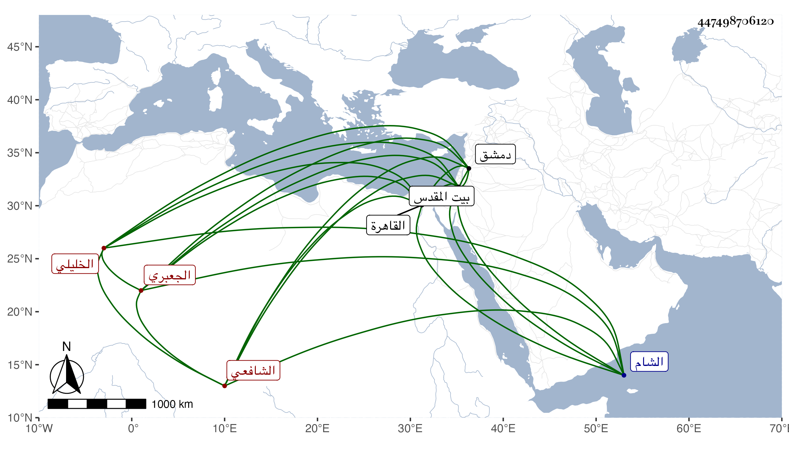

0902Sakhawi.DawLamic.ITO20230111-ara1.EIS1600.447498706120
Biography ID: 447498706120
753
خليل بن عبد القادر بن عمر بن محمد بن علي بن محمد بن إبراهيم صلاح الدين أبو سعيد حفيد شيخ بلد الخليل السراج أبي حفص الجعبري الأصل الخليلي الشافعي سبط الخليل الشهاب القلقشندي الماضي والآتي أبوه وجده وجد أبيه . ولد في المحرم سنة تسع وستين وثمانمائة ببلد الخليل ونشأ به فحفظ القرآن والمنهاج وجمع الجوامع وألفية النحو والشاطبيتين وعرض على الشمس بن حامد والنجم بن جماعة والبرهان بن أبي شريف ، وبحث ببيت المقدس على الأخير في جمع الجوامع وعلى أبي الفضل بن الإمام شيخ النحاسية بدمشق في المنهاج ثم لازم الكمال بن أبي شريف في فنون وقرأ عليه كتبا ، وقدم القاهرة مع أبيه وجده فبحث علي في شرح النخبة وسمع مني المسلسل بل قرأ علي السنن للشافعي رواية المزني وجزء ابن بخيت وغير ذلك ، وكذا قرأ علي الخيضري والسنباطي والديمي وسمع علي حفيد يوسف العجمي وأبي السعود الغراقي وعبد الغني بن البساطي وآخرين وأجاز له جماعة ودخل الشام وغيرها وطلب وكتب وفيه نباهة في الجملة وفضل وتمييز وقراءته لا بأس بها وكذا كتابته وكثرت مراسلاته لي بالأسئلة وفي بعضها : ووالله ثم والله إنني داع لكم كثيرا فإن في حياتكم للعالم غاية الجمال وكتب لبعض أصحابه وإن تقبلوا أيادي شيخنا وأستاذنا حافظ الاسلام وحيد دهره الشيخ شمس الدين السخاوي ختم الله له بخير وفسح في أجله لنفع خدام السنة الشريفة وسائر المسلمين واعلامه أن المملوك كثير الدعاء في صحائفه والثناء على شيمه الطاهرة .
